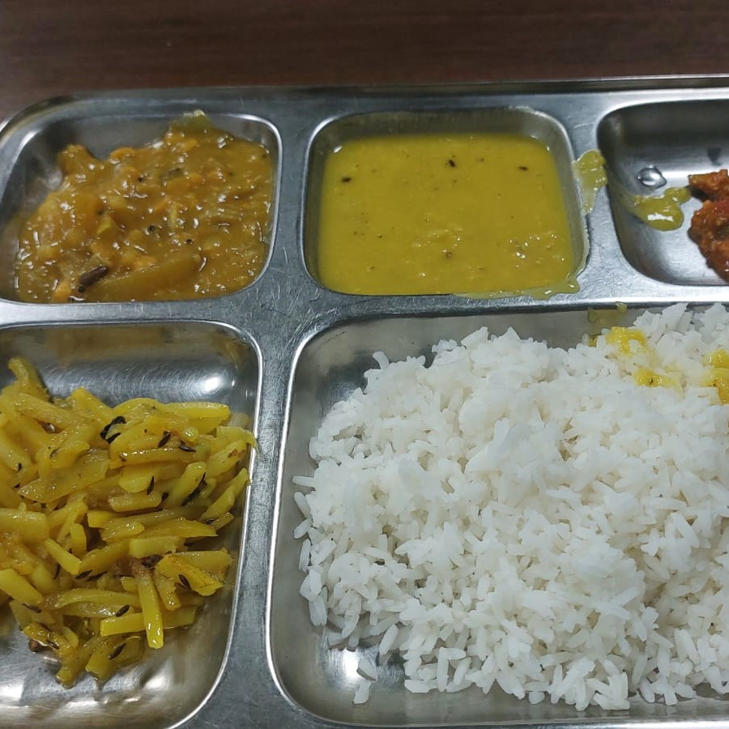

Contrast to the idea of hostel food that we had before getting the notice for offline classes, the food at the mess was not /that/ bad (XD)! Even though the food could never catch up to the level of home-made ones, it was still edible!! Other than the food, what makes the mess-time special is the way we sit together gathered around the table and share our thoughts on the mundane everyday things.
